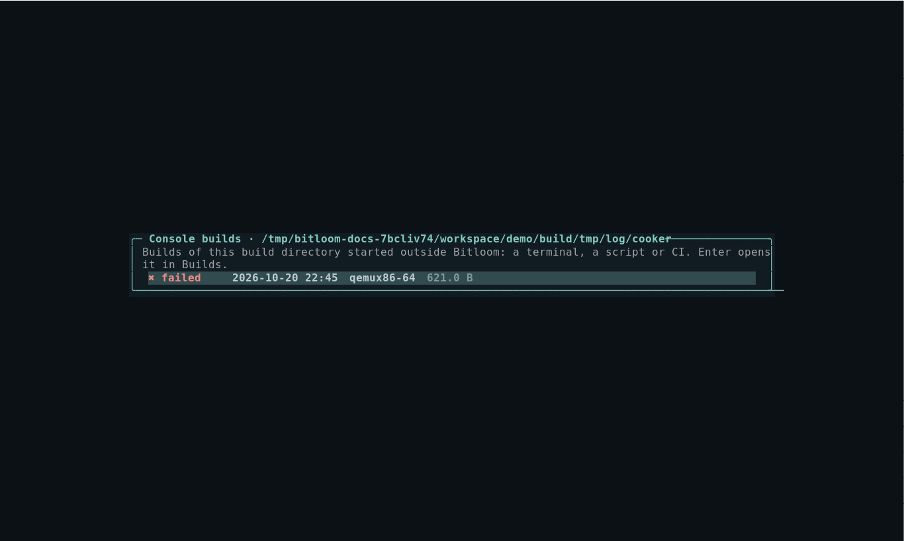

Teams, CI/CD and setup
Features for organisations with many products, images, devices and build machines. Bitloom still runs one build at a time per build service: a serial queue avoids concurrent BitBake servers fighting over a build directory.
Headless CI runs#
bitloom --ci runs operations without the TUI, with the same profiles, runtimes, serial queue and history:
bitloom --config ci/profiles.json --state .ci \
--ci kas-build --ci build:core-image-minimal \
--profile product-a --profile product-b \
--junit results.xml --summary summary.json
--ci ACTION[:TARGET]is repeatable;bitloom --list-actionslists the identifiers. Interactive operations and operations needing other inputs are refused.--profileis repeatable: the matrix runs every operation on every profile, serially.--annotations auto|github|gitlab|plain(defaultauto, fromGITHUB_ACTIONS/GITLAB_CI) folds each job's log into a collapsible section and turns failed tasks and the most frequent warnings into annotations.--junitwrites one test case per job (failed tasks, last errors and task log paths in the failure);--summarywrites JSON with status, exit code, duration, task and setscene counts, sstate hit rate, warning groups, failed tasks and the images produced.- Operations the profile's Yocto release does not provide are skipped with a warning (
<skipped>in JUnit), so one matrix can span Scarthgap and Wrynose. --fail-faststops at the first failure. SIGTERM and Ctrl+C stop the running job cleanly. Exit code 0 means every job that ran succeeded.
Example GitHub Actions step:
- run: bitloom --config ci/profiles.json --state .ci --ci kas-build --junit results.xml --summary summary.json
- uses: actions/upload-artifact@v4
if: always()
with: { name: bitloom-reports, path: "results.xml\nsummary.json\n.ci/logs/" }
Team profiles#
Share profiles through NFS or a repository with include:
{
"active": "product-a",
"include": ["/nfs/yocto/team-profiles.json", "../shared/profiles.json"],
"profiles": [ { "name": "my-experiment", "root": "/home/me/src/product", "mode": "kas-container" } ]
}
Included files contain a profiles array. Relative paths resolve from the profiles file; environment variables such as $HOME expand. Team profiles are read-only: the profile editor shows only your own, the switcher (P) marks them team, and clone creates an editable copy. An unreachable include is reported in Configuration instead of preventing Bitloom from starting.
Setup and infrastructure checks#
Configuration and bitloom --doctor (exit code 2 when a check warns) include host checks that new team members otherwise discover one failed build at a time: CPU cores, memory, Python, UTF-8 locale, inotify watches, open-files limit, Docker/Podman, kas and git, and on WSL a reminder to keep builds on the Linux filesystem.
They also report the filesystem of the build directory, TMPDIR, DL_DIR and SSTATE_DIR. TMPDIR or the build directory on NFS, CIFS, 9p or drvfs is a warning (locking, hard links, speed); shared downloads and sstate on network storage are fine, with a reminder that a read-only SSTATE_MIRRORS plus a local SSTATE_DIR scales better when many builders write.
Configuration → n (or bitloom --doctor --network) probes the shared infrastructure configured in local.conf: SSTATE_MIRRORS, PREMIRRORS, MIRRORS (TCP reachability or mounted file:// paths), BB_HASHSERVE, BB_HASHSERVE_UPSTREAM and PRSERV_HOST. It never downloads or authenticates.
Many images and machines#
Artifacts → m shows the image matrix: for every MACHINE in tmp/deploy/images, each image file with its size and date and the package count from its manifest, plus SDK installers.
Many devices#
Configure devices in Developer → Devices (SSH, labgrid places, console and test commands). Fleet status (Developer → Board view → Fleet status, or bitloom --fleet) probes every device at once with SSH BatchMode or labgrid-client show, with timeouts, and writes fleet-status.json. --fleet exits 1 unless every device is online, so a lab health job can gate on it.
Builds started elsewhere#
BitBake writes the complete console of every build to tmp/log/cooker/<MACHINE>/<timestamp>.log. Builds → c lists them, classified from their task summary, including builds started from a terminal, a script or CI. Opening one gives the same search, errors-only filter and reports as a Bitloom job, without having had Bitloom running at the time. The web dashboard lists them under the history.
Screenshot Console builds picker

Project launcher scripts#
Many products wrap kas in a script that selects the configuration through an environment variable, for example YML=board.yml ./scripts/kas-wrapper.sh build. The wrapper runtime uses such a script:
{
"name": "board",
"root": "/home/me/src/product",
"mode": "wrapper",
"launcher": ["./scripts/kas-wrapper.sh"],
"launcher_shell": ["shell", "-c", "{command}"],
"environment": { "YML": "boards/board.yml", "KAS_WORK_DIR": "/home/me/work/board" }
}
- kas operations become launcher + subcommand: Build kas configuration runs
./scripts/kas-wrapper.sh build. - Every other command runs through
launcher_shell:bitbake -e busyboxbecomes./scripts/kas-wrapper.sh shell -c 'bitbake -e busybox'. - Profile environment variables (such as
YML) reach the script;KAS_WORK_DIR/KAS_BUILD_DIRlocate the build directory as for kas profiles.
For the TUI to run BitBake commands, queries and runtime probes, the script must forward a shell command into the build environment (kas's shell -c, or whatever launcher_shell names) and keep standard input open (docker run -i) for Analysis and Developer probes. Health checks verify that the launcher exists and is executable.
Team chat notifications#
Point the build service at a Slack, Teams or Mattermost incoming webhook (or an ntfy topic the team subscribes to) in Configuration → o: every long build on a shared build machine posts its outcome, profile, duration and failing task log, with no TUI attached. See Daily helpers.
Profiles from other versions#
Profiles and history written by a newer or older Bitloom load with unknown keys ignored (Configuration lists them). The build service reports its version: when it is older than the client, the TUI and the web dashboard ask you to restart it when idle (bitloom --service-stop).